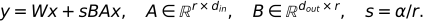

11. Fine-tuning — 목적을 바꾸는 일과 학습 비용을 줄이는 일
미세튜닝은 학습된 모델을 작업 데이터로 더 학습하는 과정이다. 문장 분류는 정답과 출력의 목적을 바꾸고, LoRA·QLoRA는 업데이트와 저장 방식을 바꾼다. 서로 다른 분류축이므로 함께 사용할 수 있다.
전체 학습 경로 · 원문 PDF 176~194쪽 · 선행: 손실과 갱신
학습 목표는 분류 출력의 shape를 만들고, 저랭크 업데이트의 파라미터 수를 계산하며, 4-bit 저장과 계산 dtype을 구분하는 것이다. 1~3절은 기본, 양자화 세부는 4절 보충이다.
시각적으로 확인할 핵심
가운데 두 경로를 공통 입력 x의 비교로 읽고, 마지막 덧셈에서 합치세요.
![LoRA는 기반 경로와 작은 수정 경로를 더한다: 열벡터 x · [6,1] 기반 W · [4,6] 는 동결; 기반 경로: W x 출력 [4,1] · 기반 수 24개; 수정 경로: A x → B(Ax) A [1,6] · B [4,1] · rank=1; 출력: Wx + sBAx 학습 수 6+4=10개; 초기 A 랜덤 · B=0 수정분 0 · 첫 B gradient는 가능](../assets/11_%ED%95%B5%EC%8B%AC%EA%B4%80%EA%B3%84.svg)
학습하는 수는 10개이고 기반 24개는 동결한다. QLoRA는 여기에 기반 저비트 저장을 결합한다.
1. 문장당 라벨 하나를 예측하려면
next-token head는 [B,T,V]를 만들지만 K개 클래스 분류는 보통 문장마다 [B,K] logits와 [B] 라벨을 사용한다. Decoder-only 모델이라면 마지막 유효 토큰의 은닉 표현 [B,C]을 뽑고 [C,K] 분류 head를 적용할 수 있다. 마지막 토큰은 causal 구조 안에서 앞 문맥을 볼 수 있다. pooling 방식은 설계 선택이며 다른 방법도 가능하다.
B=2,T=5,C=8,K=3이면 은닉 [2,5,8]에서 문장 표현 [2,8], 분류 점수 [2,3]이 된다. 정답은 예컨대 [0,2]다. 짧은 문장을 오른쪽 padding했다면 [:, -1, :]은 padding 위치일 수 있다. 길이 정보나 attention mask로 마지막 유효 위치를 고른다. padding mask는 정보 참조를 제어하며, 토큰 정답을 제외하는 loss mask와 목적이 다르다. 실제 분류 학습에서는 기반 전체를 학습할지 일부만 학습할지도 정해야 한다.
2. LoRA는 작은 두 행렬로 수정분을 학습한다
설명용 열벡터 표기로 x가 [d_in,1], 기반 W가 [d_out,d_in]일 때,

W는 동결하고 A,B를 학습한다. r은 작은 병목 폭이며 BA는 W와 같은 shape를 갖지만 rank가 최대 r인 수정분이다. s는 수정분의 크기를 조절한다. 이 장의 A/B 이름은 이 식에 고정한다. 원문 그림은 왼쪽 랜덤 행렬과 오른쪽 0 행렬을 쓰는 곱셈 표기이므로 문자 이름보다 곱의 순서와 shape를 확인한다. 행벡터로 구현하면 식과 이름 배치가 달라질 수 있다.
작은 예에서 W는 4×6으로 24개 수다. r=1이면 A는 1×6, B는 4×1로 10개를 학습한다. r=2이면 20개, r=3이면 30개다. 따라서 r이 충분히 작아야 파라미터 수가 줄고, 모든 r에서 효율적인 것은 아니다. 일반식은 기반 d_out*d_in, LoRA r*(d_in+d_out)이다. 실제 전체 모델 절감률은 어떤 층에 적용했는지에 달린다. LoRA 원논문
실제 수로 두 경로 합치기
shape 예보다 더 작은 별도 손계산으로 d_in=2,d_out=2,r=1,s=1을 쓴다. W는 단위행렬, x=(1,2)ᵀ, A=(1,-1), B=(2,3)ᵀ로 놓는다. 먼저 기반 경로는 Wx=(1,2)ᵀ다. 수정 경로는 Ax=1×1-1×2=-1이고, B(Ax)=(-2,-3)ᵀ다. 둘을 더하면 y=(-1,-1)ᵀ다. x만 (2,1)ᵀ로 바꾸면 Ax=1, 수정분=(2,3)ᵀ, 최종 y=(4,4)ᵀ가 된다. 작은 rank는 입력에 무관한 상수를 더하는 것이 아니라 학습된 낮은 폭을 통과한 입력별 수정분을 만든다. B를 0으로 되돌리면 두 입력 모두 수정분이 0이 되어 기반 출력으로 돌아간다. 이 수치는 원문 측정치가 아닌 설명용 계산이다.
3. 초기 수정분은 0, 그래도 학습은 시작할 수 있다
위 식에서 A를 작은 랜덤값, B를 0으로 시작하면 BA=0이라 첫 출력은 기반 모델과 같다. 출력 손실의 미분을 G라고 쓸 때 수정분 관련 미분은 비례관계로 grad_B ∝ G(Ax)^T, grad_A ∝ B^T G x^T다. B=0이라 처음 grad_A는 0이지만 Ax가 0이 아니면 grad_B는 0이 아닐 수 있다. 첫 갱신 뒤 B가 달라지면 A도 학습될 수 있다. A와 B를 모두 0으로 놓으면 두 경로의 미분이 함께 막힌다.
둘 다 랜덤이면 첫 수정분이 0이 아니어서 사전학습 출력을 바꾸지만 사전학습 모델 전체가 랜덤 모델로 초기화되는 것은 아니다. 원문 188쪽의 표현을 이렇게 보완한다. rank를 키우면 표현 가능한 수정분의 범위와 비용이 늘지만 품질이 항상 좋아지지는 않는다.
4. QLoRA: 기반 저장과 adapter 학습을 분리한다
일반 LoRA도 큰 기반 가중치를 메모리에 올려야 한다. QLoRA는 기반 가중치를 저비트로 저장하고 동결한 채, 계산에 필요한 값을 높은 정밀도로 복원해 adapter로 기울기를 전달한다. 원논문은 NF4, 이중 양자화, paged optimizer를 함께 제안한다. 모든 텐서가 4-bit가 되는 것은 아니며 활성값·adapter·optimizer 상태·양자화 부가정보도 메모리를 사용한다. QLoRA 원논문
예컨대 10억 파라미터의 가중치 원소만 저장하면 16-bit는 2×10⁹바이트, 4-bit는 0.5×10⁹바이트다. 이는 이론적 원소 저장량이며 총 GPU 메모리 측정이 아니다. 원문 183쪽 ‘10B에 160GB’도 optimizer·gradient·dtype 등 가정을 모르면 보편적인 필요량으로 사용하지 않는다.
BF16은 부호 1, 지수 8, 가수부 7비트의 16비트 형식이다. FP32처럼 지수 필드가 8비트여서 표현 범위가 넓지만 가수 정밀도는 낮다. 정규화가 많다는 사실 자체가 모든 가중치의 범위를 보장하지는 않는다. ‘4-bit 저장 → 복원 → BF16 등으로 연산’의 구분을 기억하고 실제 계산 dtype은 구현 설정을 확인한다. 양자화 오차가 없어지는 것도 아니다.
| 조건 | 우선 검토할 방법 | 이유와 한계 |
|---|---|---|
| 충분한 자원, 작업 변화 큼 | full fine-tuning | 전체 가중치 변경 가능, gradient·optimizer 비용 큼 |
| 여러 작업 adapter 관리 | LoRA | 작은 작업별 수정분, rank·대상층 선택 필요 |
| 기반 가중치 저장이 병목 | QLoRA | 저비트 기반 저장, 양자화와 실행 지원 고려 |
어느 방식도 모든 데이터·평가에서 우월하다고 단정하지 않는다. 분류 또는 SFT 같은 학습 목표와 위 방법을 조합한다.
5. 이해 확인
- B=3,K=2인 문장 분류의 logits와 정답 shape는?
- d_in=8,d_out=6,r=2의 W와 adapter 파라미터 수는?
- 첫 B=0일 때 어느 경로가 먼저 학습될 수 있는가?
- 4-bit 기반을 쓰면 optimizer와 활성값도 4-bit라고 말할 수 있는가?
해설과 돌아갈 위치
[3,2],[3]. 1절의 문장당 정답을 확인한다.- 48과
2*(8+6)=28. adapter가 더 적다. 2절. - 이 장의 열벡터 표기에서 B. A로 가는 gradient는 B를 곱하므로 첫 단계 0이다. 3절.
- 아니다. 기반 저장, adapter/활성값 계산, optimizer 상태는 각각 다르다. 4절.
182·194쪽은 원 실습 안내로 보존한다. 여기서는 원 Chapter 6 노트북을 실행한 결과를 주장하지 않는다. 다음 12장은 응답 학습과 선호 쌍 학습을 연결한다.